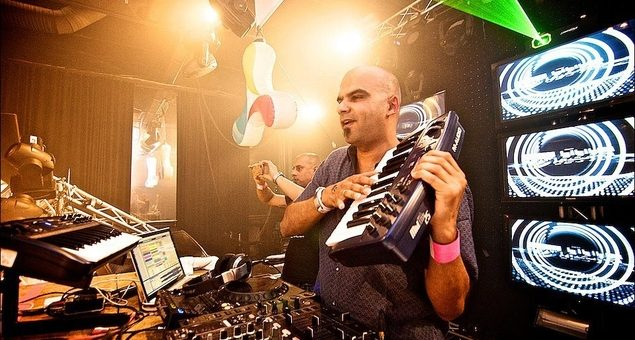

Roger Shah brings his magic keytar back for September 2012 tour


One of the world’s finest proponents of beautiful Balearic trance will be leaving summery shores of the European summer in September, returning to Australia for a solo club tour. Roger Shah will be playing shows across Perth, Melbourne, Gold Coast and Sydney; and do you think he’ll bring his infamous wireless keyboard with him for some impromptu live performances? You can bet your life on it.
Lovingly remembered by the trance community for his 2008 anthem Lost, Roger Shah has otherwise been incredibly prolific in the studio, releasing no less than seven artist albums and compilations in the past 3 years alone. His most recent effort was Openminded?, an artist album that saw him experimenting with both music for the club, as well as more downtempo listening, across its two discs.
Openminded? included his collaboration with vocalist Sian Kosheen, to recreate the club classic Hide U. You can expect he’ll be recreating it live on his magic keytar, along with plenty more of his own productions, when he returns to our clubs in September.
Future Entertainment pres. Roger Shah club dates:
Fri 14 September – Shape, Perth
Sat 15 September – Room680, Melbourne
Thu 20 September – Trinity Bar, Canberra
Fri 21 September – Platinum, Gold Coast
Sat 22 September – Metro Theatre, Sydney